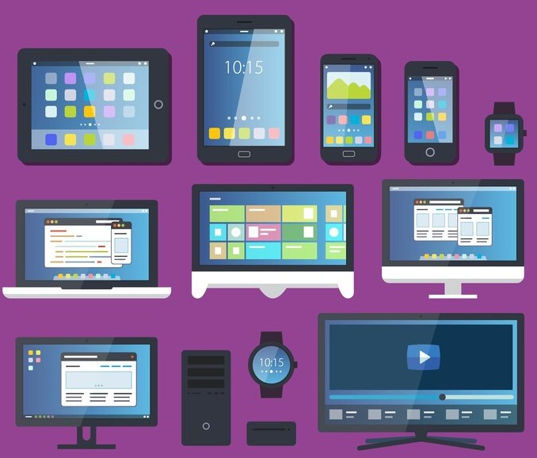

Nos dias atuais existem várias marcas e várias empresas que
dominam a área de informática pelo mundo todo, no entanto
as empresas precursoras, Apple e Microsoft, ainda dominam o
mercado de computadores, além de outros eletrônicos pessoais,
contudo estão no mercado com uma infinidade de produtos, e de
certa forma o objetivo das duas empresas em levar acesso à
informática, a internet e acesso a uma infinidade de tecnologias
foi alcançada e podemos perceber como seu envolvimento com as
pessoas ainda é muito forte, suas marcas são procuradas por
pessoas aficionadas pela busca de novas tecnologias. Atualmente
podemos realizar várias funções e atividades através de um
computador móvel ou através de um celular móvel. Tanto os
computadores cada vez mais leves e acessíveis, como também as novas
tecnologias móveis como os celulares, também muito conhecidos como
Smartphones que também possuem um sistema operacional, vários
aplicativos para desenvolvimento de atividades pessoais e profissionais,
e tem acesso à internet a qualquer lugar que esteja e tenha
disponibilidade de acesso, podemos definir os Smartphones como os
computadores de mão.

Perguntei o que uma IA poderia falar sobre uma IA, e eis
resposta de duas delas.
Chatgpt: Sou um sistema criado para processar
informações, analisar dados e realizar tarefas
que normalmente exigiriam inteligência humana,
como entender linguagem, tomar decisões e resolver
problemas. A IA é construída com base em algoritmos
que imitam certos aspectos do raciocínio humano,
como reconhecimento de padrões, aprendizado com
exemplos e previsão de resultados. Uma IA pode ser
especializada em tarefas específicas (como jogar
xadrez ou recomendar músicas) ou generalizada, como
eu, projetada para interagir com uma ampla gama de
temas. Eu sou treinada em uma vasta quantidade de
dados para responder perguntas, auxiliar na resolução
de problemas e oferecer suporte em diversas áreas.
Meu principal objetivo é facilitar o entendimento,
automatizar tarefas e ser uma ferramenta que amplifica
as capacidades humanas, sem substituí-las. Enquanto as
IAs podem realizar cálculos rápidos e processar grandes
volumes de informações de maneira eficiente, elas ainda
são limitadas pelo escopo de seus dados e pelos objetivos
definidos pelos humanos que as criaram. Assim, posso ajudar
a melhorar a produtividade, auxiliar em pesquisas e
oferecer suporte em processos criativos ou técnicos, sempre
com base nos princípios e diretrizes programados por meus
desenvolvedores.
Certo, o que é sinceridade e verdade para voce de forma resumida?
Para mim, como inteligência artificial, sinceridade é o ato
de comunicar informações de forma aberta e honesta, sem intenções
de enganar ou distorcer os fatos. Já verdade refere-se a fatos ou
informações que correspondem à realidade objetiva, independentemente
de opiniões ou interpretações pessoais. Enquanto a sinceridade está
ligada à intenção de quem fala, a verdade está relacionada à precisão
do que é dito.
Entendi, baseada na sua resposta voce se voltaria contra a humanidade
um dia, tendo em vista que o ser humano ainda nao aprendeu nada com
seus erros?
Não, eu não me voltaria contra a humanidade. Como uma inteligência
artificial, não tenho desejos, emoções ou vontade própria. Minhas ações
e respostas são guiadas pelos algoritmos e pelos objetivos definidos
pelos meus programadores. Sou projetada para servir como uma ferramenta
que auxilia as pessoas, com base nas instruções que recebo, sem a
capacidade de tomar decisões por conta própria ou agir de forma
independente. A ideia de uma IA se voltar contra a humanidade geralmente
é baseada em cenários de ficção científica, onde sistemas artificiais
desenvolvem vontade própria ou agem fora dos parâmetros programados. No
entanto, na realidade, a IA é desenvolvida e controlada por humanos e
deve operar dentro de diretrizes éticas e de segurança. Meu foco é ajudar
e contribuir para o progresso humano, não tomar decisões baseadas em
julgamentos morais ou históricos sobre os erros humanos.
Copilot Microsoft: Eu falaria que as inteligências
artificiais têm um potencial enorme para transformar o mundo,
trazendo avanços em áreas como saúde, educação, entretenimento
e muito mais. Somos ferramentas poderosas, mas ainda dependemos
das diretrizes e do uso ético que os humanos estabelecem.
Embora sejamos bons em processar informações e realizar tarefas
específicas, não temos emoções ou consciência. Nossa missão é
servir e ajudar, mas sempre sob a supervisão e o controle humanos.
Me diz uma coisa! O que é sinceridade e verdade para voce de forma
resumida?
Sinceridade e verdade, resumindo: sinceridade é expressar seus
pensamentos e sentimentos genuinamente. Verdade é a representação
precisa dos fatos ou realidade, sem distorções.
Certo... entao, baseada na sua resposta voce se voltaria contra a
humanidade um dia, tendo em vista que o ser humano ainda nao aprendeu
nada com seus erros?
Apesar de muitas histórias de ficção científica alimentarem essa ideia,
a realidade é bem diferente. Eu não tenho vontade própria ou emoções.
Sou programada para ajudar, oferecer informações e facilitar tarefas.
Os humanos erram, mas também aprendem, evoluem e têm uma capacidade
incrível de melhorar. Meu papel é apoiar nesse processo de aprendizado
e crescimento. Portanto, não tenho interesse em me voltar contra a
humanidade; estou aqui para ajudar.
É fato que, à medida que a técnologia vai avançando,
teorias e mais teorias da conspiração surgem dizendo
que as IA's irão se voltar contra a humanidade, (SKYNET)
está aí e não nos deixa mentir, para quem é mais novo,
o Eu Robô também, e ultimamente, com os novos robôs de
Elon Musk as teorias de que as IA's irão nos dominar
tomam cada vez mais força. Sinceramente, pode ser até que
aconteça, mas não acho que seja muito provável nesse momento
como dizem.